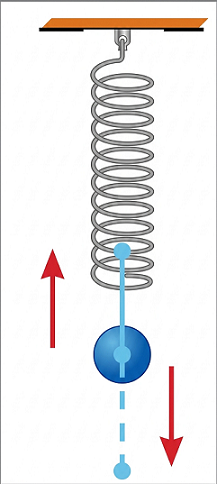
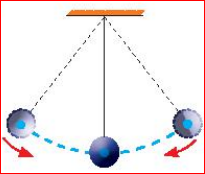
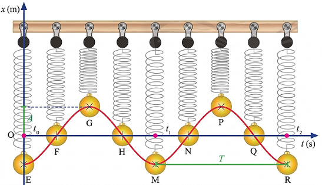
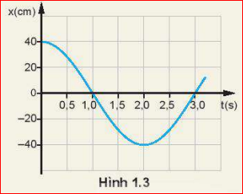
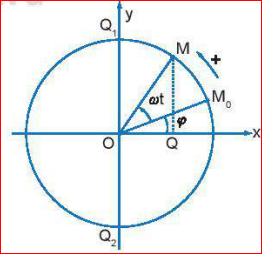

Chương 1: Dao động điều hòa
Chuẩn bị: Sử dụng con lắc lò xo hoặc con lắc đơn.


Tiến hành:
Vật chuyển động qua lại quanh vị trí cân bằng. Chuyển động như vậy gọi là dao động cơ.
Dao động cơ của một vật có thể là tuần hoàn hoặc không tuần hoàn.
Dao động tuần hoàn đơn giản nhất là dao động điều hoà.

Đường cong trên Hình 1.2 là đồ thị dao động của con lắc, nó có dạng hình sin. Nó cho biết vị trí của quả cầu trên trục x tại những thời điểm khác nhau.
Phương trình li độ của dao động điều hòa có dạng:
Trong đó:
Một vật dao động điều hoà có phương trình \( x = 2 \cos(4\pi t + \frac{\pi}{2}) \) (cm). Hãy xác định:
a) Biên độ và pha ban đầu của dao động.
b) Pha và li độ của dao động khi \( t = 2 \) s.
a) Từ phương trình, ta có:
b) Khi \( t = 2 \) s:
Đồ thị li độ - thời gian của một con lắc đơn được mô tả trên Hình 1.3 (biên độ 40cm, chu kì 2s).

1. Hãy mô tả dao động của con lắc đơn.
2. Xác định biên độ và li độ của con lắc ở các thời điểm \( t = 0; t = 0,5; t = 2,0 \) s.
1. Con lắc dao động điều hòa quanh vị trí cân bằng với biên độ 40 cm. Tại thời điểm ban đầu vật ở vị trí biên dương và di chuyển về phía VTCB.
2. Dựa vào đồ thị:
Điểm Q là hình chiếu của điểm M chuyển động tròn đều trên trục Ox. Khi M chuyển động tròn đều, điểm Q dao động điều hoà.

Câu 1: Một vật dao động điều hoà theo phương trình \( x = A \cos(\omega t + \varphi) \). Đại lượng \( A \) được gọi là:
Câu 2: Đồ thị li độ - thời gian của dao động điều hòa có dạng là đường:
Câu 3: Pha của dao động tại thời điểm \( t \) cho phép xác định:
Câu 4: Cho phương trình \( x = 5 \cos(2\pi t + \pi) \) (cm). Pha ban đầu của dao động là:
Câu 5: Một vật dao động trên đoạn thẳng dài 10 cm. Biên độ dao động của vật là:
Bài 1: Pít-tông của một động cơ đốt trong dao động trên một đoạn thẳng dài 16 cm. Xác định biên độ dao động của một điểm trên mặt pít-tông.
Bài 2: Một vật dao động điều hòa theo phương trình \( x = 10 \cos(5\pi t - \pi/3) \) (cm). Tính li độ của vật tại thời điểm \( t = 0,2 \) s.
Bài 3: Một con lắc đơn dao động với biên độ \( A = 5 \) cm. Trong 10 giây vật thực hiện được 20 dao động. Viết phương trình dao động biết tại \( t = 0 \) vật đi qua VTCB theo chiều dương.